Security Whitepaper Series
Read in order: trust boundary -> control matrix -> verification -> token hardening -> transport and auditability.
Part 1 is the entry point for security and architecture review. Before discussing controls, we define who we defend against, what we assume, and where the trust boundary is enforced in day-to-day operations.
This baseline is written for teams that need to understand the trust boundary before approving a local scanner in a regulated environment.
The later chapters reuse the same boundary model so reviewers can evaluate controls without reinterpreting the architecture each time.
How Part 1 connects to the rest of the security track
This chapter defines the threat model and trust assumptions. Part 2 maps those assumptions to explicit controls. Part 3 turns the controls into verification routines and incident readiness practice. Part 4 and Part 5 go deeper on token and transport integrity where implementation details matter most.

1. Security scope and non-scope
Scope includes account onboarding paths, credential usage path, local scan execution, local API exposure, export artifacts, and release integrity checks. Non-scope includes cloud-provider internal controls that are outside customer tenancy boundaries and third-party environments not used in scan execution.
The practical reason for explicit scope is simple: security reviews fail when teams evaluate controls against a blurred system boundary. If scope is unclear, control discussions become abstract and auditors cannot verify claims consistently.
2. Threat actors and attack objectives
- External network attacker: attempts interception, replay, or route manipulation during provider API calls.
- Compromised endpoint peer: attempts credential theft, local token misuse, or unauthorized local API calls.
- Over-privileged internal operator: uses broad permissions without review workflow controls.
- Supply-chain attacker: attempts package replacement or artifact tampering in rollout path.
These actors are selected based on real operational risk concentration for local-first governance tools. We do not assume a perfect endpoint or perfect network; we assume controls must remain effective in imperfect environments.
3. Security assumptions that must be explicit
- Customer endpoint baseline protections exist: patching, disk encryption, endpoint telemetry.
- Provider credentials assigned to scanner workflows follow least privilege and environment separation.
- Outbound route policy is controlled by customer network governance (direct or proxy profile).
- Destructive operations require human review and owner confirmation.
Assumptions are not excuses. They are test inputs. If one assumption is false in a target environment, rollout policy must adjust before broad deployment.
4. Trust boundary model and why it matters
The trust boundary is enforced between customer-controlled execution and hosted product infrastructure. Credential entry, provider API interaction, findings generation, and export packaging remain in customer-controlled runtime. Hosted pages and payment/licensing services remain outside that path.
This separation reduces the blast radius class associated with central credential custody. It does not eliminate endpoint risk; it narrows where credential exposure can occur and makes ownership clearer for security operations teams.
5. Data-path walkthrough
- Operator configures account credentials locally.
- Runtime calls provider endpoints from local execution environment.
- Metadata is normalized into findings locally.
- PDF/CSV/API outputs are generated locally and shared under operator policy.
This path is intentionally straightforward because security evidence should be inspectable by operations, finance, and audit teams without reverse engineering hidden control planes.
6. Case study: why trust-boundary precision prevents review deadlock
In many cost-governance evaluations, the first deadlock appears when security asks whether provider credentials are ever transmitted to a hosted multi-tenant service. If product teams answer with ambiguous language, review slows down for weeks. In contrast, a clear trust-boundary model allows security to map controls quickly: endpoint controls for local runtime, network controls for egress routes, release controls for binary integrity, and review controls for action approval.
The business effect is not theoretical. Clear boundary language reduces legal/security review loops and avoids repeated architecture clarification meetings. In practice, this often saves more rollout time than any single feature change.
7. Residual risks and mitigation direction

- Endpoint compromise risk: reduced by endpoint hardening and credential rotation discipline.
- Route misconfiguration risk: reduced by explicit proxy profiles and stage/reason diagnostics.
- Human error in action workflows: reduced by review packs, owner assignment, and non-destructive default flow.
- Artifact integrity risk: reduced by checksum verification and controlled release process.
Implementation FAQ for architecture review
Q: Does local-first mean zero security work for customer teams? No. Local-first changes where controls are enforced. It does not remove endpoint and network governance responsibilities.
Q: Why is this chapter separate from control details? Because controls are meaningful only after boundary and assumptions are agreed. Otherwise teams argue about controls against different mental models.
Q: What is the minimum evidence a reviewer should request in Part 1? Trust-boundary diagram, data-path narrative, credential lifecycle expectation, and explicit residual-risk list.
Field notes from enterprise security reviews
In enterprise reviews, the first practical question is usually not about encryption algorithm choice. It is about responsibility boundaries during failure. If a credential misuse incident occurs, who can revoke, who can validate revocation, and who can confirm service continuity? Teams that answer these questions early move through approval quickly. Teams that postpone ownership mapping often have to redo security review with additional governance artifacts.
A second pattern is confusion between architectural promise and operational reality. "Local-first" can be interpreted as "automatically secure." That interpretation is wrong. Local-first changes the trust boundary and can reduce central credential exposure, but endpoint controls and route governance remain mandatory. Security sign-off should include explicit acknowledgement of this tradeoff so expectations are aligned before rollout.
A third pattern concerns evidence quality. Security teams are generally willing to approve if control claims are specific and testable. They become skeptical when controls are described abstractly without executable verification steps. This is why we recommend attaching one concrete verification example to each high-impact control in review packets.
Finally, legal and procurement teams increasingly ask for plain-language statements they can map to policy. Keep one concise paragraph for each of these themes: credential custody, data-path scope, operator responsibilities, and artifact integrity. This reduces cross-functional friction and keeps security review focused on technical truth rather than interpretation variance.
Review questions for Part 1 sign-off
- Can we clearly explain where provider credentials exist during normal operation?
- Can we identify which controls are customer-owned versus product-owned?
- Do our runbooks reflect the actual trust boundary, not an assumed SaaS model?
- Do we have minimum evidence artifacts ready for architecture committee review?
Appendix: review walkthrough for architecture committee
When presenting this chapter to an architecture committee, use a short but structured sequence. Start with scope and non-scope in one slide. Then describe the trust boundary with one data-flow path from credential input to export output. After that, list residual risks with explicit ownership. Avoid generic language such as "secure by design" without control detail. Committees respond better to precise claims that can be challenged and verified.
During Q and A, keep answers mapped to control ownership rather than abstract architecture language. For example, if asked "who handles endpoint compromise risk," answer with concrete ownership and remediation cadence. If asked "what evidence proves credentials remain local," answer with execution path and operational validation approach. This style shortens decision time because reviewers can map each claim to an accountable team.
For organizations with procurement due diligence, include one plain-language section that states expected customer obligations. This prevents misunderstanding where procurement assumes product-managed controls for customer-managed infrastructure boundaries. The clearer this contract is, the lower the post-purchase integration friction.
Finally, keep this appendix updated after major architecture or rollout model changes. A stale trust-boundary narrative can pass early review but fail later compliance checks, forcing expensive re-approval cycles.
Data sources for this chapter
- Security page and Documentation Core Concepts for trust-boundary baseline.
- API Token Guide and API Center for local API trust assumptions.
- Release Ledger for release-process controls tied to operational trust.
Next: from model to control matrix
Continue to Part 2 for control-by-control mapping, including control intent, operator responsibilities, and validation checkpoints.
Security Review Checklist
Download the operator checklist used in enterprise reviews
Use this checklist in architecture review, rollout sign-off, and recurring governance audits.